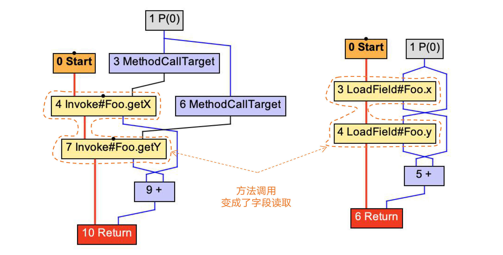
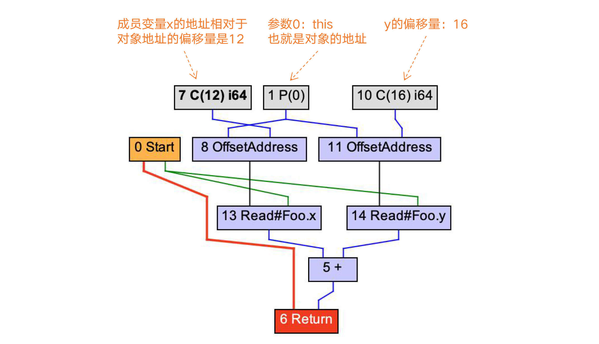
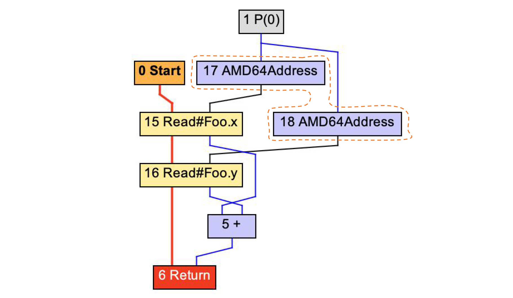
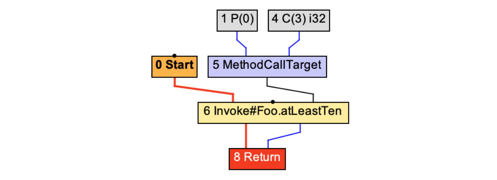
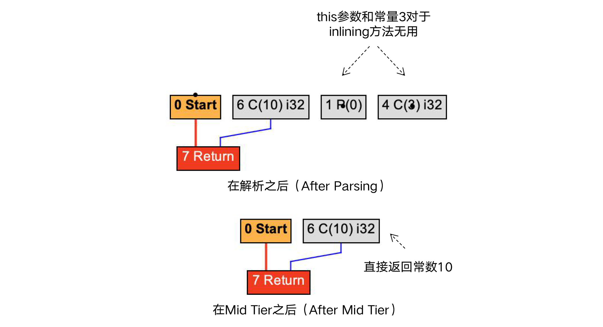
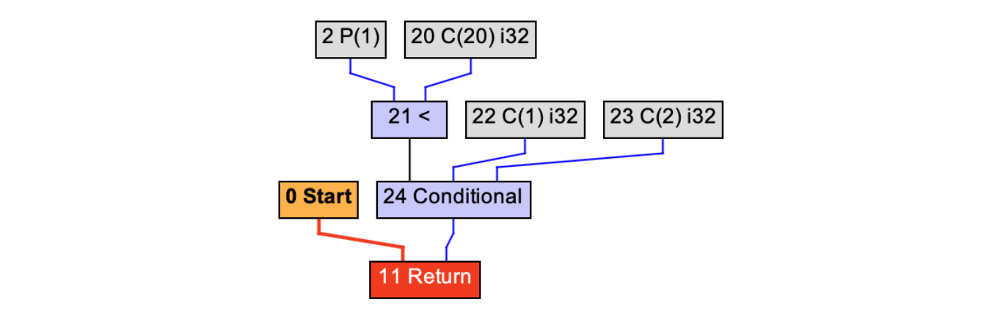
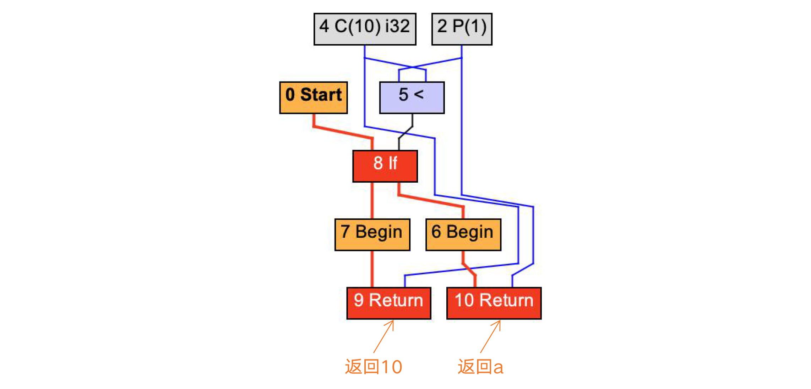
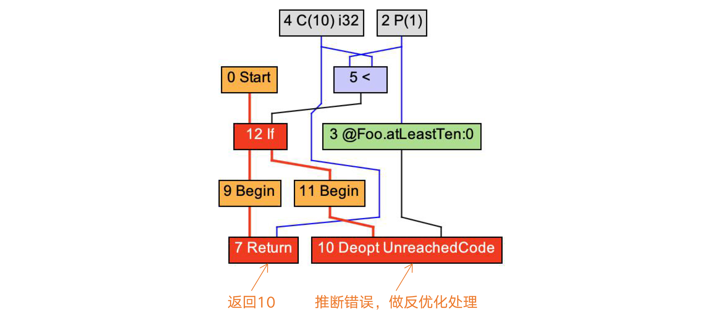
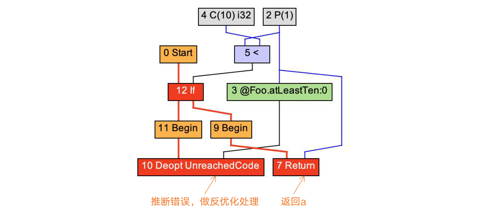
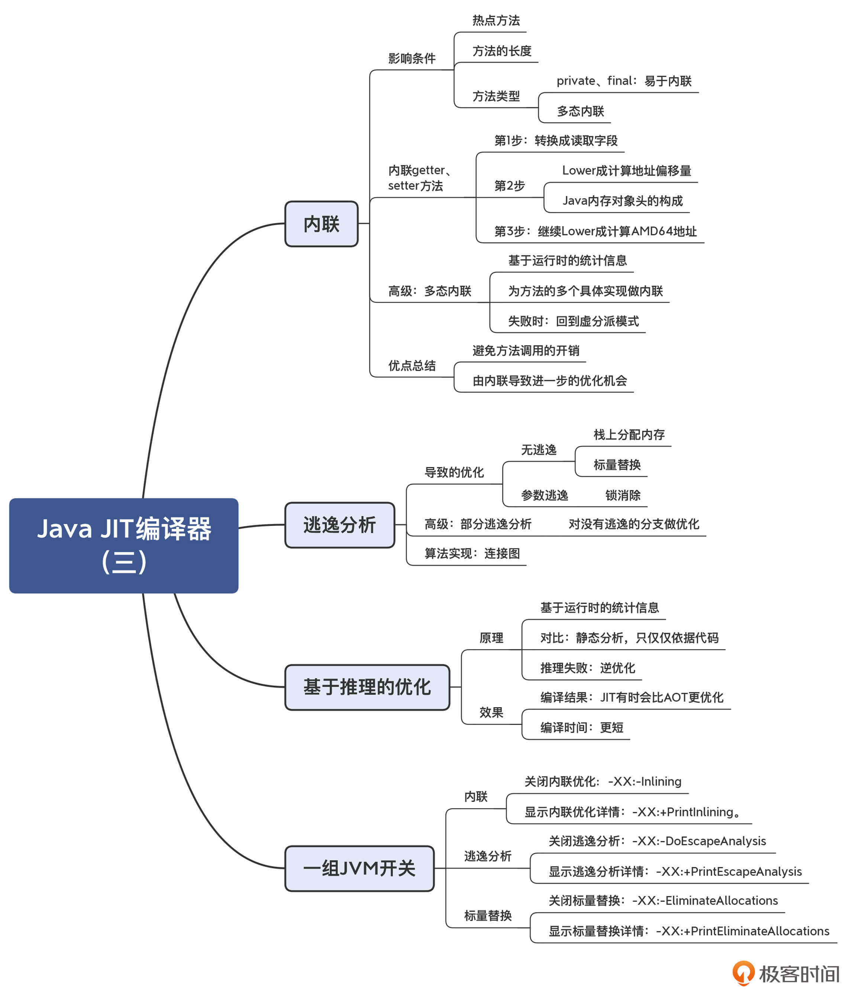

- 00 学习指南 如何学习这门编译原理实战课？.md.html
- 00 开篇词 在真实世界的编译器中游历.md.html
- 01 编译的全过程都悄悄做了哪些事情？.md.html
- 02 词法分析：用两种方式构造有限自动机.md.html
- 03 语法分析：两个基本功和两种算法思路.md.html
- 04 语义分析：让程序符合语义规则.md.html
- 05 运行时机制：程序如何运行，你有发言权.md.html
- 06 中间代码：不是只有一副面孔.md.html
- 07 代码优化：跟编译器做朋友，让你的代码飞起来.md.html
- 08 代码生成：如何实现机器相关的优化？.md.html
- 09 Java编译器（一）：手写的编译器有什么优势？.md.html
- 10 Java编译器（二）：语法分析之后，还要做些什么？.md.html
- 11 Java编译器（三）：属性分析和数据流分析.md.html
- 12 Java编译器（四）：去除语法糖和生成字节码.md.html
- 13 Java JIT编译器（一）：动手修改Graal编译器.md.html
- 14 Java JIT编译器（二）：Sea of Nodes为何如此强大？.md.html
- 15 Java JIT编译器（三）：探究内联和逃逸分析的算法原理.md.html
- 16 Java JIT编译器（四）：Graal的后端是如何工作的？.md.html
- 17 Python编译器（一）：如何用工具生成编译器？.md.html
- 18 Python编译器（二）：从AST到字节码.md.html
- 19 Python编译器（三）：运行时机制.md.html
- 20 JavaScript编译器（一）：V8的解析和编译过程.md.html
- 21 JavaScript编译器（二）：V8的解释器和优化编译器.md.html
- 22 Julia编译器（一）：如何让动态语言性能很高？.md.html
- 23 Julia编译器（二）：如何利用LLVM的优化和后端功能？.md.html
- 24 Go语言编译器：把它当作教科书吧.md.html
- 25 MySQL编译器（一）：解析一条SQL语句的执行过程.md.html
- 26 MySQL编译器（二）：编译技术如何帮你提升数据库性能？.md.html
- 27 课前导读：学习现代语言设计的正确姿势.md.html
- 28 前端总结：语言设计也有人机工程学.md.html
- 29 中端总结：不遗余力地进行代码优化.md.html
- 30 后端总结：充分发挥硬件的能力.md.html
- 31 运行时（一）：从0到语言级的虚拟化.md.html
- 32 运行时（二）：垃圾收集与语言的特性有关吗？.md.html
- 33 并发中的编译技术（一）：如何从语言层面支持线程？.md.html
- 34 并发中的编译技术（二）：如何从语言层面支持协程？.md.html
- 35 并发中的编译技术（三）：Erlang语言厉害在哪里？.md.html
- 36 高级特性（一）：揭秘元编程的实现机制.md.html
- 37 高级特性（二）：揭秘泛型编程的实现机制.md.html
- 38 综合实现（一）：如何实现面向对象编程？.md.html
- 39 综合实现（二）：如何实现函数式编程？.md.html
- 40 成果检验：方舟编译器的优势在哪里？.md.html
- 不定期加餐1 远程办公，需要你我具备什么样的素质？.md.html
- 不定期加餐2 学习技术的过程，其实是训练心理素质的过程.md.html
- 不定期加餐3 这几年，打动我的两本好书.md.html
- 不定期加餐4 从身边的牛人身上，我学到的一些优秀品质.md.html
- 不定期加餐5 借助实例，探究C++编译器的内部机制.md.html
- 划重点 7种编译器的核心概念与算法.md.html
- 期末答疑与总结 再次审视学习编译原理的作用.md.html
- 热点问题答疑 如何吃透7种真实的编译器？.md.html
- 用户故事 易昊：程序员不止有Bug和加班，还有诗和远方.md.html
- 知识地图 一起来复习编译技术核心概念与算法.md.html
- 结束语 实战是唯一标准！.md.html
- 捐赠
15 Java JIT编译器（三）：探究内联和逃逸分析的算法原理
你好，我是宫文学。
基于Graal IR进行的优化处理有很多。但有些优化，针对Java语言的特点，会显得更为重要。
今天这一讲，我就带你来认识两个对Java来说很重要的优化算法。如果没有这两个优化算法，你的程序执行效率会大大下降。而如果你了解了这两个算法的机理，则有可能写出更方便编译器做优化的程序，从而让你在实际工作中受益。这两个算法，分别是内联和逃逸分析。
另外，我还会给你介绍一种JIT编译所特有的优化模式：基于推理的优化。这种优化模式会让某些程序比AOT编译的性能更高。这个知识点，可能会改变你对JIT和AOT的认知，因为通常来说，你可能会认为AOT生成的机器码速度更快，所以通过这一讲的学习，你也会对“全生命周期优化”的概念有所体会。
好，首先，我们来看看内联优化。
内联（Inlining）
内联优化是Java JIT编译器非常重要的一种优化策略。简单地说，内联就是把被调用的方法的方法体，在调用的地方展开。这样做最大的好处，就是省去了函数调用的开销。对于频繁调用的函数，内联优化能大大提高程序的性能。
执行内联优化是有一定条件的。第一，被内联的方法要是热点方法；第二，被内联的方法不能太大，否则编译后的目标代码量就会膨胀得比较厉害。
在Java程序里，你经常会发现很多短方法，特别是访问类成员变量的getter和setter方法。你可以看看自己写的程序，是否也充斥着很多对这种短方法的调用？这些调用如果不做优化的话，性能损失是很厉害的。你可以做一个性能对比测试，通过“-XX:-Inlining”参数来阻止JVM做内联优化，看看性能降低得会有多大。
但是这些方法有一个好处：它们往往都特别短，内联之后，实际上并不会显著增加目标代码长度。
比如，针对add2示例方法，我们采用内联选项优化后，方法调用被替换成了LoadField（加载成员变量）。
public int add2(){
return getX() + getY();
}

图1：将getter方法内联
在做了Lower处理以后，LoadField会被展开成更底层的操作：根据x和y的地址相对于对象地址的偏移量，获取x和y的值。

图2：计算字段x和y的地址
而要想正确地计算字段的偏移量，我们还需要了解Java对象的内存布局。
在64位平台下，每个Java对象头部都有8字节的标记字，里面有对象ID的哈希值、与内存收集有关的标记位、与锁有关的标记位；标记字后面是一个指向类定义的指针，在64位平台下也是8位，不过如果堆不是很大，我们可以采用压缩指针，只占4个字节；在这后面才是x和y字段。因此，x和y的偏移量分别是12和16。
图3：内存中，Java对象头占据的空间
在Low Tier编译完毕以后，图2还会进一步被Lower，形成AMD64架构下的地址。这样的话，编译器再进一步翻译成汇编代码就很容易了。

图4：生成AMD64架构的地址计算节点
内联优化除了会优化getter、setter这样的短方法，它实际上还起到了另一个重要的作用，即跨过程的优化。一般的优化算法，只会局限在一个方法内部。而启动内联优化后，多个方法会合并成一个方法，所以就带来了更多的优化的可能性。
我们来看看下面这个inlining示例方法。它调用了一个atLeastTen方法，这个方法对于<10的参数，会返回10；对于≥10的参数，会返回该参数本身。所以你用肉眼就可以看出来，inlining方法的返回值应该是10。
public int inliningTest(int a){
return atLeastTen(3); //应该返回10
}
//至少返回10
public int atLeastTen(int a){
if (a < 10)
return 10;
else
return a;
}
如果不启用编译器的内联选项，那么inliningTest方法对应的IR图，就是常规的方法调用而已：

图5：不启用内联时调用atLeastTen()方法
而一旦启用了内联选项，就可以触发一系列的优化。在把字节码解析生成IR的时候，编译器就启动了内联分析过程，从而会发现this参数和常量3对于inliningTest方法根本是无用的，在图里表现成了一些孤岛。在Mid Tier处理完毕之后，inliningTest方法就直接返回常量10了。

图6：启用内联后，调用atLeastTen()方法
另外，方法的类型也会影响inlining。如果方法是final的，或者是private的，那么它就不会被子类重载，所以可以大胆地内联。
但如果存在着多重继承的类体系，方法就有可能被重载，这就会导致多态。在运行时，JVM会根据对象的类型来确定到底采用哪个子类的具体实现。这种运行时确定具体方法的过程，叫做虚分派（Virtual Dispatch）。
在存在多态的情况下，JIT编译器做内联就会遇到困难了。因为它不知道把哪个版本的实现内联进来。不过编译器仍然没有放弃。这时候所采用的技术，就叫做“多态内联（Polymorphic inlining）”。
它的具体做法是，在运行时，编译器会统计在调用多态方法的时候，到底用了哪几个实现。然后针对这几个实现，同时实现几个分支的内联，并在一开头根据对象类型判断应该走哪个分支。这个方法的缺陷是生成的代码量会比较大，但它毕竟可以获得内联的好处。最后，如果实际运行中遇到的对象，与提前生成的几个分支都不匹配，那么编译器还可以继续用缺省的虚分派模式来做函数调用，保证程序不出错。
这个案例也表明了，JIT编译器是如何充分利用运行时收集的信息来做优化的。对于AOT模式的编译来说，由于无法收集到这些信息，因此反倒无法做这种优化。
如果你想对多态内联做更深入的研究，还可以参考这一篇经典论文《Inlining of Virtual Methods》。
总结起来，内联优化不仅能降低由于函数调用带来的开销，还能制造出新的优化机会，因此带来的优化效果非常显著。接下来，我们看看另一个能带来显著优化效果的算法：逃逸分析。
逃逸分析（Escape Analysis, EA）
逃逸分析是JVM的另一个重要的优化算法，它同样可以起到巨大的性能提升作用。
逃逸分析能够让编译器判断出，一个对象是否能够在创建它的方法或线程之外访问。如果只能在创建它的方法内部访问，我们就说这个对象不是方法逃逸的；如果仅仅逃逸出了方法，但对这个对象的访问肯定都是在同一个线程中，那么我们就说这个对象不是线程逃逸的。
判断是否逃逸有什么用呢？用处很大。只要我们判断出了该对象没有逃逸出方法或线程，就可以采用更加优化的方法来管理该对象。
以下面的示例代码为例。我们有一个escapeTest()方法，这个方法可以根据输入的年龄，返回年龄段：小于20岁的返回1，否则返回2。
在示例程序里，我们创建了一个Person对象，并调用它的ageSegment方法，来返回年龄段。
public int escapeTest(int age){
Person p = new Person(age);
return p.ageSegment();
}
public class Person{
private int age;
private float weight;
public Person(int age){
this.age = age;
}
//返回年龄段
final public int ageSegment(){
if (age < 20)
return 1;
else
return 2;
}
public void setWeight(float weight){
this.weight = weight;
}
public float getWeidht(){
return weight;
}
}
你可以分析一下，针对这段程序，我们可以做哪些优化工作？
首先是栈上分配内存。
在Java语言里，对象的内存通常都是在堆中申请的。对象不再被访问以后，会由垃圾收集器回收。但对于这个例子来说，Person对象的生命周期跟escapeTest()方法的生命周期是一样的。在退出方法后，就不再会有别的程序来访问该对象。
换句话说，这个对象跟一个int类型的本地变量没啥区别。那么也就意味着，我们其实可以在栈里给这个对象申请内存就行了。
你已经知道，在栈里申请内存会有很多好处：可以自动回收，不需要浪费GC的计算量去回收内存；可以避免由于大量生成小对象而造成的内存碎片；数据的局部性也更好，因为在堆上申请内存，它们的物理地址有可能是不相邻的，从而降低高速缓存的命中率；再有，在并发计算的场景下，在栈上分配内存的效率更高，因为栈是线程独享的，而在堆中申请内存可能需要多线程之间同步。所以，我们做这个优化是非常有价值的。
再进一步，还可以做标量替换（Scalar Replacement）。
这是什么意思呢？你会发现，示例程序仅仅用到了Person对象的age成员变量，而weight根本没有涉及。所以，我们在栈上申请内存的时候，根本没有必要为weight保留内存。同时，在一个Java对象的标准内存布局中，还要有一块固定的对象头的内存开销。在64位平台，对象头可能占据了16字节。这下倒好，示例程序本来只需要4个字节的一个整型，最后却要申请24个字节，是原需求的6倍，这也太浪费了。
通过标量替换的技术，我们可以根本不生成对象实例，而是把要用到的对象的成员变量，作为普通的本地变量（也就是标量）来管理。
这么做还有一个好处，就是编译器可以尽量把标量放到寄存器里去，连栈都不用，这样就避免了内存访问所带来的性能消耗。
Graal编译器也确实是这么做的。在Mid Tier层处理完毕以后，你查看IR图，会发现它变成了下面的这个样子：

图7：对Person对象做标量替换
你会看到，编译器连Person的ageSegement方法也内联进来了。最后优化后的函数相当于：
public int escapeTest(int age){
return age<20 ? 1 : 2;
}
图7中的Conditional是一个条件计算的三元表达式。你看到这个优化结果的时候，有没有感到震惊？是的。善用编译器的优化算法，就是会达到如此程度的优化。优化前后的代码的功能是一样的，但优化后的代码变得如此简洁、直奔最终计算目标，忽略中间我们自己编程所带来的冗余动作。
上面讲的都是没有逃逸出方法的情况。这种情况被叫做NoEscape。还有一种情况，是虽然逃逸出了方法，但没有逃逸出当前线程，也就是说不可能被其他线程所访问，这种逃逸叫做ArgEscape，也就是它仅仅是通过方法的参数逃逸的。最后一种情况就是GlobalEscape，也就是能够被其他线程所访问，因此没有办法优化。
对于ArgEscape的情况，虽然编译器不能做内存的栈上分配，但也可以做一定的优化，这就是锁消除或者同步消除。
我们知道，在并发场景下，锁对性能的影响非常之大。而很多线程安全的对象，比如一些集合对象，它们的内部都采用了锁来做线程的同步。如果我们可以确定这些对象没有逃逸出线程，那么就可以把这些同步逻辑优化掉，从而提高代码的性能。
好了，现在你已经理解了逃逸分析的用途。那么逃逸分析的算法是怎么实现的呢？这方面你可以去参考这篇经典论文《Escape Analysis for Java》。论文里的算法利用了一种数据结构，叫做连接图（Connection Graph）。简单地说，就是分析出了程序中对象之间的引用关系。
整个分析算法是建立在这样一种直觉认知上的：基于一个连接图，也就是对象之间的引用关系图，如果A引用了B，而A能够被线程外的程序所访问（线程逃逸），那么也就意味着B也是线程逃逸的。也就是说，逃逸性是有传染能力的。通过这样的分析，那些完全没被传染的对象，就是NoEscape的；只被ArgEscape对象传染的，那就也是ArgEscape的。原理说起来就是这么简单。
另外，我们前面所做的分析都是静态分析，也就是基于对代码所做的分析。对于一个对象来说，只要存在任何一个控制流，使得它逃逸了，那么编译器就会无情地把它标注为是逃逸对象，也就不能做优化了。但是，还会出现一种情况，就是有可能这个分支的执行频率特别少，大部分情况下该对象都是不逃逸的。
所以，Java的JIT编译器实际上又向前迈进了一步，实现了部分逃逸分析（Partial Escape Analysis）。它会根据运行时的统计信息，对不同的控制流分支做不同的处理。对于没有逃逸的分支，仍然去做优化。在这里，你能体会到，编译器为了一点点的性能提升，简直无所不用其极呀。
如果你还想对部分逃逸分析做进一步的研究，那你可以参考这篇论文：《Partial Escape Analysis and Scalar Replacement for Java》。
总结起来，逃逸分析能够让对象在栈上申请内存，做标量替换，从而大大减少对象处理的开销。这个算法对于对象生命周期比较短的场景，优化效果是非常明显的。
在讲内联和逃逸算法的时候，我们都发现，编译器会根据运行时的统计信息，通过推断来做一些优化，比如多态内联、部分逃逸分析。而这种优化模式，就叫做基于推理的优化。
基于推理的优化（Speculative Optimization）
我刚刚说过，一般情况下，编译器的优化工作是基于对代码所做的分析，也就是静态分析。而JIT编译还有一个优势，就是会根据运行时收集的统计信息来做优化。
我还是以Foo.atLeastTen()方法举例。在正常情况下，它生成的HIR是下面的样子，根据条件表达式的值（a<10），分别返回10和a。

图8：基于静态分析编译atLeastTen()方法
而如果我们在主程序里调用atLeastTen方法是采用下面示例代码中的逻辑，在启动JIT编译器时，已经循环了上万次。而在这上万次当中，只有9次i的值是小于10的，那么编译器就会根据运行时的统计信息判断，i的值大概率是大于10的。所以，它会仅针对大于10的分支做编译。
而如果遇到小于10的情况，则会导致逆优化。你会看到，IR中有一个绿色的FrameState节点，这个节点保存了栈帧的状态，在逆优化时会被用到。
int i = 0;
while(true){
i++;
foo.atLeastTen(i);
...
}

图9：基于推理优化，只编译if语句的第1个分支，返回10
我们把主程序修改一下，再做一次实验。这次，我们传给Foo.atLeastTen方法的参数是i%10，也就是参数a的取值范围永远是在0到9之间。这一次，JIT编译器会反过来，仅针对a小于10的分支做编译，而对a大于10的情况做逆优化处理。
int i = 0;
while(true){
i++;
foo.atLeastTen(i%10);
...
}

图10：基于推理优化，只编译if语句的第2个分支，返回a
通过这个简单的例子，你对JIT编译器基于推理的优化情况就有了一个直观的了解。对于atLeastTen这个简单的方法，这样的优化似乎并不会带来太多的好处。但对于比较复杂的程序，那既可以节省编译时间，也能减少编译后的代码大小，收益是很高的。比如对于程序中仅用于输出Debug信息的分支，就根本不需要生成代码。
另外，这种基于推理的优化，还会带来其他额外的优化机会。比如对于逃逸分析而言，去掉了一些导致逃逸的分支以后，在剩下的分支中，对象并没有逃逸，所以也就可以做优化了！
总结起来，基于运行时的统计信息进行推理的优化，有时会比基于静态分析的AOT产生出性能更高的目标代码。所以，现代编译技术的实践，会强调“全生命周期”优化的概念。甚至即使是AOT产生的目标代码，仍然可以在运行期通过JIT做进一步优化。LLVM项目的发起人之一，Chris Lattner就曾写了一篇论文来提倡这个理念，这也是LLVM的设计目标之一。
课程小结
今天我带你了解了Java JIT编译器中两个重要的优化算法，这两个优化算法都会大大提升程序的执行效率。另外，你还了解了在JIT编译中，基于运行时的信息做推理优化的技术。
在课程中，我不可能带你去分析所有的优化算法，但你可以根据课程的内容去举一反三，研究一下里面的其他算法。如果你对这些算法掌握得比较清晰，那你就可以胜任编译器的开发工作了。因为编译器开发的真正的工作量，都在中后端。
另外，熟悉这些重要的优化算法的原理，还有助于你写出性能更高的程序。比如说，你要让高频使用的代码易于内联；在使用对象的时候，让它的作用范围清晰一些，不要做无用的关联，尽量不要逃逸出方法和线程之外，等等。
本讲的思维导图我也放在下面了，供你参考。

一课一思
今天的思考题，还是想请你设计一个场景，测试内联 vs 无内联，或者做逃逸优化 vs 无逃逸优化的性能差异。借此，你也可以熟悉一下如何控制JVM的优化选项。欢迎在留言区分享你在测试中的发现。
关闭内联优化: -XX:-Inlining。JDK8缺省是打开的。- 显示内联优化详情：-XX:+PrintInlining。- 关闭逃逸分析：-XX:-DoEscapeAnalysis。JDK8缺省是打开的。- 显示逃逸分析详情：-XX:+PrintEscapeAnalysis。- 关闭标量替换：-XX:-EliminateAllocations。JDK8缺省是打开的。- 显示标量替换详情：-XX:+PrintEliminateAllocations。
参考资料
© 2019 - 2023 Liangliang Lee. Powered by gin and hexo-theme-book.